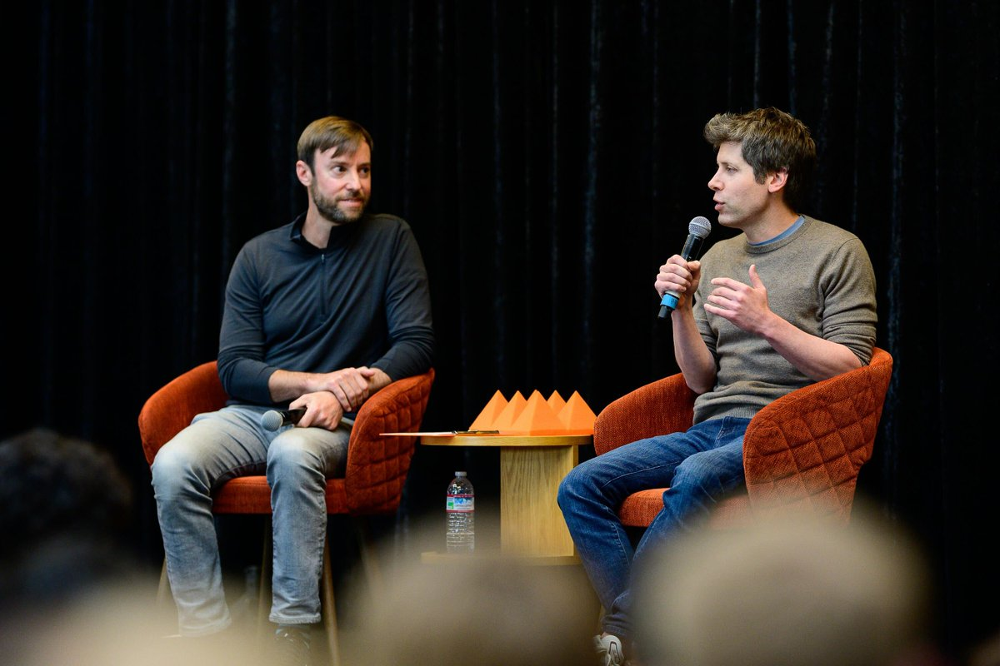
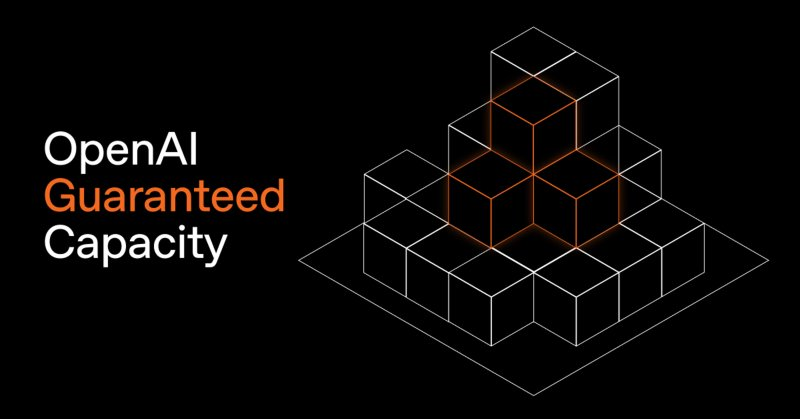
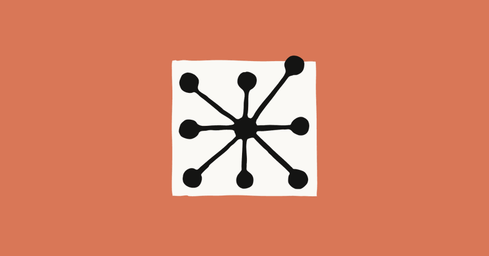

AI 日报 · 2026年5月21日
Karpathy 加入 Anthropic，AI 产业进入「基础设施 + 分发」新阶段
Karpathy 宣布加入 Anthropic（13.2 万赞）。Google I/O 密集发布：Gemini Spark 个人 AI Agent、Gemini 3.5 Flash 大幅跃进、Project Genie 更新。Sam Altman 推出 Token 长期合约 + YC 创业公司 200 万美元 Token 投资。Aaron Levie：Token 成本成为财富 500 强 CIO 头号话题。播客精选：Serval 的 AI 原生 ITSM 实践。
Karpathy ✕ Anthropic
Gemini Spark
Tokenmaxxing
Google I/O
Gemini 3.5 Flash
AI 原生 ITSM
1
焦点事件
1
深度播客
17
追踪 Builder
40
推文总量
今日头条
Andrej Karpathy 加入 Anthropic——前 Tesla AI 总监、OpenAI 创始成员宣布：「我认为大语言模型前沿的下一个几年将尤其具有塑造性。我很兴奋加入这个团队并回归研发。」13.2 万赞、1 万转发、7220 条回复。Thariq（Claude Code 团队）回应：「未来光明，干活吧。」Dan Shipper 发问：「what did karpathy see」。Matt Turck 调侃：「Anthropic 被 AI 耶稣正式封圣。」
Google 密集发布：Gemini Spark + 3.5 Flash + Project Genie——Josh Woodward 推出 Gemini Spark 24/7 个人 AI Agent。Gemini 3.5 Flash 评测大幅跃升：Agentic Coding 76.2%、Finance Agent 57.9%。Project Genie 新增 Street View 世界锚定。计算发现引擎 AlphaEvolve + ERA 公开。
焦点事件
Karpathy 加入 Anthropic——人才流向信号
Karpathy 此前是 Tesla AI 总监、OpenAI 创始团队成员、斯坦福 PhD。他的加入让 Anthropic 在人才战场上再次加码。这条推文引发整个 AI 社区连锁反应——13.2 万点赞、1 万转发。社区反应两极：Dan Shipper 意味深长地发问「what did karpathy see」（1518 赞），Matt Turck 调侃「Anthropic 被 AI 耶稣正式封圣」。
Karpathy 原文：「I think the next few years at the frontier of LLMs will be especially formative. I am very excited to join the team here and get back to R&D.」
新品发布
Google Gemini Spark：24/7 个人 AI Agent
Google Labs VP Josh Woodward 宣布 Gemini Spark——一个全天候主动式个人 AI Agent，可管理任务并导航数字生活，全程由用户指挥。本周向 Trusted Tester 推送，下周面向美国 Google AI Ultra 订阅用户开放 Beta。配套发布：Project Genie 更新（Street View 世界锚定）、Flow 周年回顾、计算发现引擎（AlphaEvolve + ERA）。
行业信号
Sam Altman：Token 期货 + YC 大礼包
三条重磅推文：① OpenAI 推出 1-3 年 Token 长期合约，折扣锁定算力——「模型越来越强，世界将在相当长一段时间内处于算力受限状态」（4727 赞）。② 向当前 YC batch 每家创业公司投资 200 万美元 Token，称其为「tokenmaxxing startups」。③ 确认「Tokenmaxxing confirmed」。Box CEO Aaron Levie 在财富 500 强 CIO 晚宴上印证：Token 成本已是头号话题。

企业视角
Aaron Levie：Token 成本成企业头号话题
Box CEO 刚参加完财富 500 强 CIO 晚宴：Token 成本正在成为企业 AI 部署的核心议题，「策略五花八门：有公司把 AI 预算分散到多个部门，有的集中控制模型选择，还有的积极拥抱 tokenmaxxing——但基本上没人觉得自己有正确的方案。」他也实测了 Gemini 3.5 Flash：在 Box AI 复杂文档任务上相比 Gemini 3 Flash 跃升 12 个百分点。

深度分析
Matt Turck：Gemini 3.5 Flash 评测拆解
FirstMark VC 合伙人分析：MMMU-Pro 83.6%（多模态）、Terminal-Bench 76.2%（编程 Agent）、Toolathon 56.5%（真实世界任务）、Finance Agent 2 57.9%。「Google 今天的发布确实令人印象深刻——还记得他们落后的时候吗？」SWE-Bench、OSWorld 均领先。图表中即使不是 Google 领先也加粗标出最高分的设计被赞「优雅」。

Builder 动态
Guillermo Rauch：Vercel CDN + Claude 集成
Vercel CEO 三连发：① 新 CDN 定价方案「平滑」流量峰值——消除压力但不降级路由（142 赞）。② Claude Managed Agents ✕ Vercel Sandbox 正式集成（205 赞）。③ 展示 rerun.io——Svelte + Three.js + Vercel 技术栈（965 赞）。
更多 Builder 动态
Builder 速览
Swyx：AI SDLC 四步工作流
四步 AI 软件开发生命周期：① 约 50 个测试 + 多分辨率视觉抽查；② /plan 隔离文件，添加日志/错误边界；③ 不中断地完成所有剩余工作（边 commit/deploy/test）；④ 定期抽查已部署功能。另提到「Contextual 被 windsurfed」——竞争格局变化。
Ryo Lu：Composer 2.5 全能选手
Cursor 设计师现在只用 Composer 2.5 做规划、构建、迭代和调试。「尤其在 UI 工作上极其出色——配合 Cursor Design Mode 进入心流状态」（861 赞）。另分享 Cursor + Jira 集成：「把 backlog 变成现实」。
Nikunj Kothari：自主工作者即将到来
FPV Ventures 合伙人警告：「即使在湾区 AI 圈子里，也很少有人真正意识到我们已经从助手→同事→即将进入自主工作者的转变。对大量工作岗位而言。」他称之为 AI 的「扩散时代」——模型需要被扩散到一切事物中，这将花费 10-20 年。
Garry Tan：代码即艺术 + GBrain = WinFS 2.0
YC CEO：① Rick Rubin 播客——「代码也可以是艺术」；② WinFS 历史：「我 2003-2005 年在微软试图让 WinFS 工作。有了大语言模型，WinFS 现在可以实现了，它叫 GBrain」（72 赞）；③ 「Tokenmaxxing confirmed」（97 赞）。
Claude 官方：Devin 创始人访谈 + Sandbox/MCP
三条推文：① Scott Wu（Devin 创始人）希望让每个工程团队的软件开发速度快 10 倍（2434 赞）；② 「The Problem Solvers」系列采访使用 Claude 的创始人；③ 自托管沙箱 + MCP 隧道正式可用（336 赞）。
Google Labs：Project Genie ✕ Flow ✕ 计算发现
三大更新：Project Genie 新增 Street View 世界锚定、新库、外部共享（331 赞）；Flow 周年回顾——从文字生成视频到 Omni、Agent、Tools（98 赞）；计算发现引擎 AlphaEvolve + ERA（55 赞）。
Peter Yang：Builder vs 网红
Roblox PM + 14 万读者在 Google I/O 现场：「我想做一个 Builder，分享我的学习（和错误）。不能让 Builder 肌肉萎缩。」引用：「只管大量尝试，边做边学」「我们只有 90 天路线图」「我已经 5 年没做过一年期路线图了。」
Aditya Agarwal：AI + 物理世界
South Park Commons GP、前 Dropbox CTO：「未来光明。我们将在 AI + 物理世界的交汇处拥有令人惊叹的东西。」分享 4 张配图展示融合愿景（27 赞）。
Anthropic 工程
Managed Agents 架构演进：大脑与双手解耦
Anthropic 工程博客发布深度技术文章《Scaling Managed Agents》，揭示架构演进关键细节。核心洞察：将「大脑」（Claude + harness）与「双手」（沙箱、工具）解耦——大脑不再住在容器里，沙箱变成可替换的「牛」而非需要精心养护的「宠物」。p50 首 Token 延迟下降约 60%，p95 下降超 90%。密钥永远不进入沙箱。Session 变成持久化事件日志，Claude 通过 getEvents() 按需检索——上下文管理从不可逆决策变成可恢复查询。
原文：「We designed a meta harness — opinionated about the interface around Claude, but open to what runs behind it.」
Anthropic 发布
自托管沙箱 + MCP 隧道：企业安全边界
Claude 官方宣布两个关键能力：① 自托管沙箱——Agent 工具执行可跑在用户自己的基础设施上（Cloudflare、Daytona、Modal、Vercel），文件/代码/密钥不出企业边界。② MCP 隧道——Agent 可连接私有网络内的 MCP 服务器（内部数据库、私有 API、知识库、工单系统），无需暴露到公网，一个轻量网关建立单向出站连接即可。

播客深度
AI 原生 ITSM：Serval 如何从零重建企业 IT
嘉宾：Jake Stauch（Serval 创始人 & CEO）| 播客：Training Data。Serval 定位为 AI 原生的 ServiceNow 替代方案——第一性原理重建企业 IT 服务管理。
从第一性原理重建 ITSM
核心洞察：「数据库上的工作流」是正确的抽象，但手工搭建和维护太慢。Serval 保留这些原语，用 AI 生成工作流和更新数据库。「用自然语言描述工作流——Codegen 引擎即时生成代码，几乎零开发时间。」数据库同样——描述需要哪些数据、从哪些来源获取，系统自动生成代码并保持同步。
「自动化必须比手动更简单」
Jake 的关键洞察：当面对「手动重置密码」vs「打开工作流构建器拖拽搭建」时，IT 人员选择手动。核心问题不是能力，而是摩擦。「如果自动化真的更容易，你就会做自动化。当下决策的人必须感觉选自动化比选手动更容易。」这是产品设计的底层逻辑。
双 Agent 架构：Admin Agent ✕ Helpdesk Agent
Serval 将 Agent 分为两层：Admin Agent 帮助 IT 管理员构建工具和技能（经审批和权限设定后发布）；Helpdesk Agent 服务终端用户，只能使用管理员明确批准的工具。这解决了企业 AI 部署的核心矛盾——个人想要自主权，组织想要控制权。Helpdesk Agent 可以发挥全部推理能力解决用户问题，但只能动用 IT 明确说「可以」的工具。
模型选择的工程现实
OpenAI 模型擅长用户交互（工具调用和回复最稳定），Anthropic 模型擅长自动化代码生成。新模型发布经常不是即插即用——「有些东西变好了，有些以前工作得很好的反而不行了。」有时需要降级回来，因为可靠性比原始智能更重要。「客户洞察和同理心」才是护城河——「产品优势一夜之间就能被复制。」
AI 原生组织实践
Serval 取消了解决方案工程和 SDR 岗位——AE 直接用 Serval 获取即时答案和战卡。「更少、更好」是招聘信条。AI 对每个角色拥有「优先拒绝权」——先假设它可以被自动化。同时，「人依然是你最大的护城河。让更好的人留在房间里，是唯一能让你保持领先于竞争对手的事。」
GitHub Trending · 5月21日
AI Agent 工具链统治 GitHub Trending
tinyhumansai/openhuman ⭐ 3,394 · Rust
你的个人 AI 超级智能。私有、简洁且极其强大。
multica-ai/andrej-karpathy-skills ⭐ 2,679
基于 Karpathy 对 LLM 编码缺陷的观察，提炼出的 CLAUDE.md 文件，用于改善 Claude Code 行为。
colbymchenry/codegraph ⭐ 2,123 · TypeScript
预索引代码知识图谱，支持 Claude Code、Codex、Cursor 和 OpenCode——更少 Token、更少工具调用、100% 本地。
Imbad0202/academic-research-skills ⭐ 1,667 · Python
Claude Code 学术研究技能：研究 → 写作 → 评审 → 修改 → 定稿。
HKUDS/CLI-Anything ⭐ 890 · Python
「CLI-Anything：让所有软件成为 Agent-Native」——CLI-Hub 地址：clianything.cc
anthropics/claude-plugins-official ⭐ 674 · Python
Anthropic 官方管理的高质量 Claude Code 插件目录——生态建设进入新阶段。
趋势观察：今天的 GitHub Trending 被 AI Agent 工具链彻底统治。Karpathy 加入 Anthropic 的消息直接催生了 andrej-karpathy-skills 冲上第二；代码知识图谱（CodeGraph）和 Agent 编程工具（oh-my-pi、CLI-Anything）反映开发者正在疯狂优化 Agent 工作效率。Anthropic 官方 Claude Plugins 目录上榜，标志着生态建设进入新阶段。
为什么重要
Karpathy ✕ Anthropic：人才流向信号
Karpathy 加入 Anthropic 不只是人事新闻。他是 OpenAI 创始团队 + Tesla AI 总监——他的选择暗示了大语言模型前沿重心正在悄然转移。13.2 万赞表明整个行业都在盯着这次人才流动。Dan Shipper 的发问「what did karpathy see」才是真正值得思考的问题。
Tokenmaxxing：AI 的经济模式正在成型
Sam Altman 的算力长期合约 + YC 创业公司 200 万美元 Token 投资 +「Tokenmaxxing confirmed」勾勒出清晰图景：AI 产业正从「按量付费」走向「算力期货」。财富 500 强 CIO 在晚宴上把 Token 成本列为头号议题——当算力变成稀缺资源，锁定长期算力的能力本身就成为一种竞争护城河。
AI 原生 IT：双 Agent 架构解决自主 vs 控制的矛盾
Serval 的 Admin Agent + Helpdesk Agent 设计优雅地解决了 Jake 识别的核心矛盾：个人想要自主权，组织想要控制权。这直接映射到今天企业 AI 部署的最大摩擦——不是模型能力不够，而是组织不知道如何安全地释放它。Jake 的结论：默认说「是」让公司走在前列，即使有安全风险——「这些风险是真实的，但先行者会学到最多。」
模型升级不是即插即用
Jake 的经验与 Anthropic 的事后剖析一致：新模型发布不是即插即用。围绕已知特性构建的 Prompt 调优和基础设施在新模型上可能失效。有时需要降级回来——因为可靠性比原始智能更重要。这印证了 Anthropic 的 Caitlin 所说的：同一个模型在不同 harness 上的评测结果差异巨大。Harness 工程正在成为比模型本身更深的护城河。
今日一问：当 Karpathy 选择 Anthropic、OpenAI 推出算力期货、Google 发布 24/7 个人 Agent、财富 500 强 CIO 在晚宴上热议 Token 成本——AI 产业正在从「谁能训练最好的模型」转向「谁能把模型变成最好的产品和服务」。这场转型的赢家可能不是模型最强的人，而是最理解如何在约束条件下释放模型能力的人。Serval 的双 Agent 架构、Anthropic 的 harness 工程、OpenAI 的算力承诺——都在回答同一个问题：当模型能力不再是瓶颈，什么才是？
📚 参考来源
Andrej Karpathy — 宣布加入 Anthropic（13.2 万赞）Sam Altman — Token 长期合约（4727 赞）
Sam Altman — YC 创业公司 200 万美元 Token 投资
Josh Woodward — Gemini Spark 发布
Aaron Levie — Token 成本成企业头号话题
Matt Turck — Gemini 3.5 Flash 评测分析
Guillermo Rauch — Claude ✕ Vercel Sandbox 集成
Claude 官方 — 自托管沙箱 + MCP 隧道
Claude 官方 — Scott Wu / Devin 创始人访谈
Nikunj Kothari — 自主工作者预测
Garry Tan — 代码即艺术 + GBrain
Swyx — AI SDLC 四步工作流
Ryo Lu — Composer 2.5 全能选手
Peter Yang — Builder vs 网红
Google Labs — Project Genie 更新
Aditya Agarwal — AI + 物理世界
Anthropic 工程博客 — Scaling Managed Agents
Training Data 播客 — Serval CEO Jake Stauch
来源：YouTube 播客、X/Twitter。AI 日报每日更新。